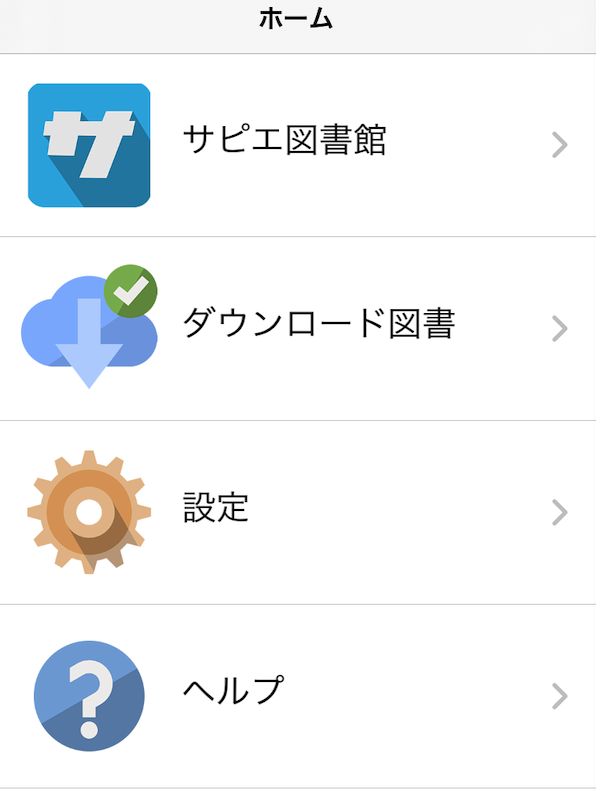
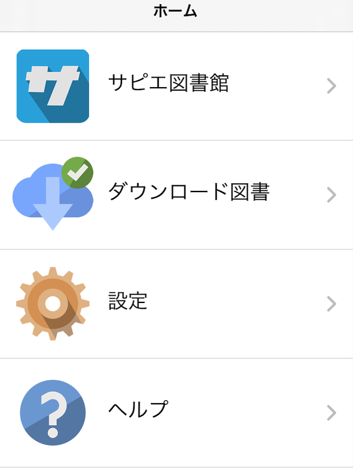
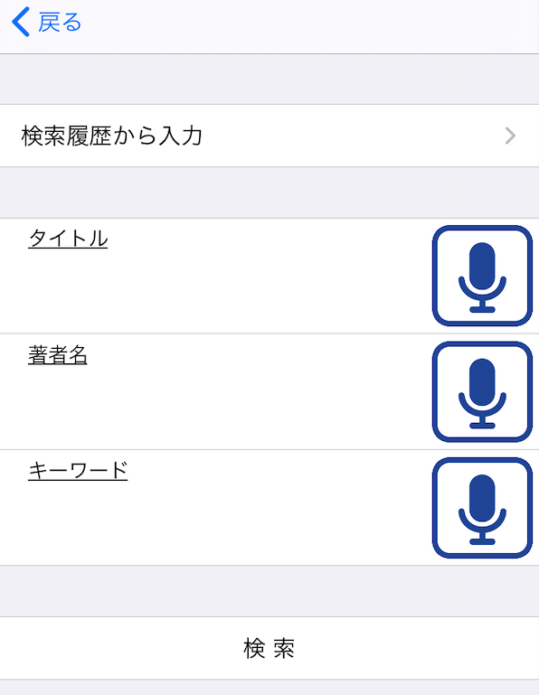
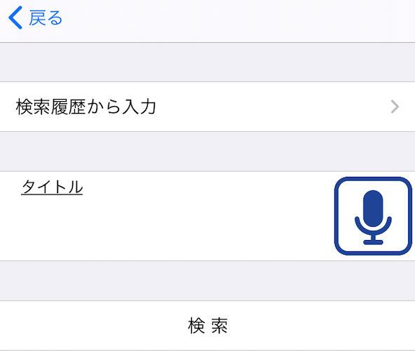

画像のサンプル
 



目次
サピエ図書館
サピエ図書館とは、日本点字図書館がシステムを管理し、全国視覚障がい者情報提供施設協会が運営している情報サービスです。
マイブック モバイルでは、サピエ図書館で公開されている、膨大な数の録音図書をダウンロードし、楽しむことができます。
※サピエ図書館の図書を読むには、サピエ事務局への利用のお申し込みが必要です。
事務局より発行されたIDとパスワードを、マイブック モバイルに登録することにより利用可能になります。
サピエ事務局への利用申し込みについては、サピエのサイトをご覧ください。
※マイブック モバイルのサピエ閲覧機能は、サピエ事務局のご協力により完成いたしました。この場を借りて、お礼申し上げます。
サピエ図書館にログインしよう
サピエ図書館を利用するには、ログインする必要があります。
初めてサピエ図書館選択すると、ログイン画面に切り替えるダイアログが表示されます。
IDとパスワードを入力していただくとログインができたかダイアログに表示されます。
ログインが出来たらダイアログの「閉じる」を選択していただいて、サピエ図書館画面に移動できます。

最初の一覧には、「図書検索」「定期配信の新着」「雑誌検索」「サピエIDとパスワード」があります。

図書検索
様々な種類の図書を検索できます。
「デイジー新着情報」「人気のある順」「分類別」「前回の検索結果一覧」「タイトル 著者名 検索」があります。

図書を検索しよう
デイジー新着情報
「過去1週間」と「過去1か月」の2種類からお選びいただけます。
各項目をダブルタップすると図書の一覧ページに移動します。
ダウンロード方法については、図書検索の「図書をダウンロードしよう」をご参照ください。
人気のある順
人気のある本の上位100位が一覧されます。
ダウンロード方法については、図書検索の「図書をダウンロードしよう」をご参照ください。
図書をダウンロードしよう
「デイジー新着情報」「人気のある順」「分類別」では項目を選択していくことで図書一覧を表示できます。
一覧の中からダウンロードしたい図書を選択します。
ダイアログに「詳細」「ダウンロード」が表示されます。
「詳細」を選択すると、出版社やあらすじなどの図書の詳細が表示されます。
詳細画面にも「ダウンロード」ボタンがあるので、詳細を見て読んでみたい図書をダウンロードすることができます。
「ダウンロード」を選択するとダウンロード画面に移動して、図書のダウンロードが開始されます。
ダウンロードをやめたい場合は、ダウンロード画面の「キャンセル」を押してください。ダウンロードがキャンセルされ、図書一覧画面に戻ります。
ダウンロード完了すと、すぐにダウンロードするか問うダイアログが表示されます。
「再生」を選択すると図書の再生画面に移動して再生されます。
「閉じる」を選択すると図書一覧画面に戻ります。
タイトル 著者名検索を使ってみよう
この検索方法では、タイトル・著者やキーワードを絞り込むことができます。
音声入力にも対応しています。入力エディットの横のマイクボタンを押すと音声入力が始まります。
初めての音声入力だと、音声認識とマイクを使用する許可を促すダイアログが表示されるので、「OK」を押すと音声入力ができるようになります。
入力時間は5秒間です。
検索履歴から入力することもできます。
「検索履歴から入力」を選択すると履歴画面に移動します。
表示されている履歴の中から再検索したい履歴を選択すると、入力された状態で検索画面に戻ります。
履歴は自動で保存されます。履歴を削除したいときは、画面右上の「編集」を押すと削除モードになります。
削除モードの状態で履歴を選択すると、履歴を削除できます。
履歴は20件まで保存できます。20件を超えると、古い履歴から順番に削除されていきます。
検索結果から図書をダウンロードする方法は「図書をダウンロードしよう」をご参照ください。
検索結果は並べ替えることができます。検索結果の件数の上に並べ替えを選択できる項目があります。
並べ替えの初期値は「新着順」です。現在選択されている並べ替え順は並べ替え項目に表示されています。
並べ替え項目を選択すると並べ替え画面に移動して、「新着順」「タイトル順」「著者順」の中から選択することができます。現在選択されている並べ替え順にはチェックマークがついています。
並べ替え順を選択すると、検索結果画面に戻って並べ替えを実行します。
雑誌検索
雑誌とは、定期的に更新される図書のことを指し、定期配信を登録しておくことで新刊が出たときに自動で雑誌の一覧が更新されます。
雑誌検索には、「新着順」「タイトル順」「タイトル検索」「定期配信の登録」「定期配信の削除」があります。
雑誌をダウンロードしよう
新着順
雑誌の新着一覧が表示されます。ダウンロード方法については、図書検索の「図書をダウンロードしよう」をご参照ください。
タイトル順
「月刊誌」「週刊誌」「その他、隔月刊、季刊誌、不定期刊誌」があります。各項目とも選択すると一覧が表示されます。ダウンロードについては、図書検索の「図書をダウンロードしよう」をご参照ください。
タイトル検索
タイトルを絞り込むことができます。
音声入力にも対応しています。入力エディットの横のマイクボタンを押すと音声入力が始まります。
初めての音声入力の場合、音声認識とマイクを使用する許可を促すダイアログが表示されますので、「OK」を押すと音声入力ができるようになります。
入力時間は5秒間です。
検索履歴から入力することもできます。
「検索履歴から入力」を選択すると履歴画面に移動します。
表示されている履歴の中から再検索したい履歴を選択すると、入力された状態で検索画面に戻ります。
履歴は自動で保存されます。履歴を削除したいときは、画面右上の「編集」を押すと削除モードになります。
削除モードの状態で履歴を選択すると、履歴を削除できます。
履歴は20件まで保存できます。20件を超えると、古い履歴から順番に削除されていきます。
検索結果から図書をダウンロードする方法は図書検索の「図書をダウンロードしよう」をご参照ください。
検索結果は並べ替えることができます。検索結果の件数の上に並べ替えを選択できる項目があります。
並べ替えの初期値は「新着順」です。現在選択されている並べ替え順は並べ替え項目に表示されています。
並べ替え項目を選択すると並べ替え画面に移動して、「新着順」「タイトル順」の中から選択することができます。現在選択されている並べ替え順にはチェックマークがついています。
並べ替え順を選択すると、検索結果画面に戻って並べ替えを実行します。
定期配信の雑誌を読もう
「雑誌検索」内の「定期配信の登録」から登録を行うことで、雑誌の定期配信を受け取ることができます。
登録した雑誌は、「サピエ図書館」内の、「定期配信の新着」からダウンロードすることができます。
ダウンロード方法については、図書検索の「図書をダウンロードしよう」をご参照ください。
定期配信の登録
「月刊誌」「週刊誌」「その他、隔月刊、季刊誌、不定期刊誌」の中からお選びいただけます。
各項目を選択すると、雑誌名が一覧されます。
雑誌名を選択すると登録が完了します。
登録は30件まで可能です。上限に達すると登録できなくなるので、「定期配信の解除」から登録を解除してください。
定期配信の解除
「月刊誌」「週刊誌」「その他、隔月刊、季刊誌、不定期刊誌」のうち、登録されている項目のみ表示されます。
各項目を選択すると、登録されている雑誌名が表示されます。
雑誌名を選択すると登録の解除が完了します。
デイジー新着情報
あたらしい図書を探せます。 期間は「過去1週間」と「過去1ヶ月」から選べます。
人気のある順
人気のある図書を探せます。
分類別
分類別に図書を探せます。 興味のあるジャンルの図書を一覧したいときに便利です。
前回の検索結果一覧
直前の検索結果を表示できます。
タイトル著者名検索
タイトル、著者名、キーワードから図書を検索できます。
音声入力も可能です。
検索履歴からの入力ができます。
一度、検索した条件で再検索したいときに便利です。
検索履歴は20件まで保存されています。
20件を超えると、古い履歴から削除されます。

定期配信の新着
雑誌検索から定期配信に登録した雑誌を一覧します。 最初はなにも登録されていないためなにも表示されません。
雑誌検索
雑誌検索ができます。 雑誌は、定期的に更新される図書のことを指し、定期配信を登録しておくことで新刊が出たときに自動で雑誌の一覧が更新されます。

新着順
雑誌の新着を一覧します。
タイトル順
「月刊誌」「週刊誌」「その他、隔月刊、季刊誌、不定期刊誌」から選べます。

タイトル検索
タイトルを指定して検索ができます。
音声入力にも対応しています。マイクボタンを押すことで5秒間、音声入力ができます。
検索履歴からの入力ができます。
一度、検索した条件で再検索したいときに便利です。
検索履歴は20件まで保存されています。
20件を超えると、古い履歴から削除されます。

定期配信の登録
「月刊誌」「週刊誌」「その他、隔月刊、季刊誌、不定期刊誌」から選べます。
登録した雑誌は、「定期配信の新着」で読むことができます。

サピエIDとパスワード
サピエ図書館にログインするためのIDとパスワードをこの画面で入力します。
初めてのログインの場合はログインが完了すると、サピエ図書館ページに移動します。
ダウンロード図書
Dropbox
設定

バックグラウンド再生
デイジー再生中に、アプリを切り替えたりスリープしても再生を続ける設定です。 ONにすることで、有効になります。
Dropboxと連携
Dropboxと連携して、クラウドストレージに保存したデイジー図書を楽しむことができます。 機能を利用するには、Dropboxのアカウントが必要です。
バージョン情報
アプリのバージョンを確認できます。